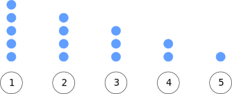

Introduction
I once heard two people at my university discussing a math problem. They claimed that a friend of theirs was asked, during a Skype interview for admission to Columbia's Computer Science PhD program, the following question:"Suppose the following experiment: we draw random samples, one at a time, from a uniform distribution. The experiment ends when we draw a sample that was greater from the last. What is the expected time $n$ that the experiment will run for?"
Figure 1: Expected placing for the first sample based on the mean $\mu$.
So what about the second sample we draw? Well, since it is uniformly random, a sample has a $50\%$ chance of being greater than the mean $\mu$, and a $50\%$ chance of being smaller than the mean $\mu$.
Figure 2: Two possible placings for the second sample.
It seems pretty possible that the experiment could end at $n = 2$, right? And even if it didn't end at the second sample, it seems very likely it would end, on average, at the third sample. This is because, sice $x_2$ is smaller than $x_1$, the values for $x_3$ that would allow for the experiment to continue are even fewer.
Figure 3: Possible placings for the third sample.
To test our theory, we can write a small Python program that will perform a few such experiments and see the results:
import random
t = 1000000
winning = []
for idx in range(t):
prev = random.random()
nxt = random.random()
counter = 2
while (prev >= nxt):
prev = nxt
nxt = random.random()
counter += 1
winning.append(counter)
print "Average: " + str(sum(winning) / float(t))
Formalising the problem
Let us model the experiment using a random variable $X$. The random variable $X$ denotes the probability of the experiment ending after $n$ draws. Since we need to draw at least two samples for the experiment to end, it follows that $n \geq 2$. The answer to the question is essentially the expected value of $X$ $$ E[X] = \sum_{n=2}^{\infty}n \cdot P[X = n] $$ Let's examine what exactly is the value of $P[X = n]$. To do that, let's denote the samples as $x_1, ..., x_n$. Then, the sample $x_2$ needs to be smaller than $x_1$, $x_3$ needs to be smaller than $x_2$, and so on, with $x_n$ being greater than $x_{n-1}$. Formally $$ \begin{align} P[X = n] &= P[x_n > x_{n-1}, x_{n-1} < x_{n-2}, x_{n-2} < x_{n-3}, ..., x_{2} < x_{1}]\\ &= P[x_n > x_{n-1}, x_{n-1} < x_{n-2} < x_{n-3} < ... < x_{2} < x_{1}]\\ \end{align} $$ since we need the first $n-1$ samples to be in a descending order, and the $n-$th sample to be greater than the last. Still, this probability seems incomputable. We are going to change that. Using the Law of Conditional Probability we can break the above probability into two parts $$ \begin{align} P[X = n] &= P[x_n > x_{n-1}, x_{n-1} < x_{n-2} < x_{n-3} < ... < x_{2} < x_{1}]\\ &= P[x_n > x_{n-1} | x_{n-1} < x_{n-2} < x_{n-3} < ... < x_{2} < x_{1}] \cdot P[x_{n-1} < x_{n-2} < x_{n-3} < ... < x_{2} < x_{1}]\\ \end{align} $$ Now we have two probabilities to compute; however, they are significantly easier to compute:- Let's consider the second one first. What does $P[x_{n-1} < x_{n-2} < ... < x_{1}]$ really mean? In essence, it defines an ordering of $n-1$ items. Suppose we have $n-1$ labeled balls and we want to put them in a line. Combinatorics tells us that the different possible orderings of $n-1$ items are $(n-1)!$. To understand this we can think of it as trying to place an item at each point of the order. When choosing the item for the first position, we have $n$ possible choices. Then, when we are choosing the item for the second position, since one item was placed in the first position, we have $n-1$ possible choices. So, if we have to order $5$ items all the possible combinations are $5 + 4 + 3 + 2 + 1 = 5!$.

Figure 3: Ordering 5 labeled balls.
Since all the $x_i$ are samples from a uniform distribution, we can argue that each of these orderings are equally likely. We want to enforce a specific ordering, namely the order $x_{n-1} < x_{n-2} < x_{n-3} < ... < x_{2} < x_{1}$. Therefore, since we want only one out of $(n-1)!$ possible orderings, the probability is $P[x_{n-1} < x_{n-2} < ... < x_{1}] = \frac{1}{(n-1)!}$.
- Consider a given ordering of balls $x_{\kappa_1} < x_{\kappa_2} < ... x_{\kappa_{n-1}}$, where $\kappa_i \in 1, 2, ..., n-1$. Then observing a new sample can go into one of $n$ possible positions.
Figure 4: Possible position for the new sample.
Again, because the distribution is uniform, each of these positions are equally likely1. So at what place does the probabilty $P[x_n > x_{n-1} | x_{n-1} < x_{n-2} < ... < x_{1}]$ wants the new sample placed? The only condition is that $x_n$ needs to be larger than $x_{n-1}$. But $x_{n-1}$ is the leftmost ball in the ordering. So, any position but the leftmost one will satisfy this constraint. Since, out of the $n$ possible positions, the $n-1$ satisfy the constaint, it follows that $P[x_n > x_{n-1} | x_{n-1} < x_{n-2} < ... < x_{1}] = \frac{n-1}{n}$.
Discussion
I find this problem very interesting for a few reasons:- First of all, it is very simple to state, uderstand, and explain. It is also very simple to reason; everyone can understand that, because of its nature, it is highly unlikely that the average running time of the experiment is greater than, say, $10$.
- While reasoning about this problem seems to be rather easy, the formal analysis is significantly more convoluted. I think this is interesting because it allows people to think; we often dismiss certain statements because they seem obvious, and we might be correct. However, many obvious statements have rather obfuscated explanations.
- The mathematical constant $e$ arises at the very end. It is very frequent for students to question teachers about how the mathematical constants are used in practice; this is a good, and unexpected, example.
1: This is not trivial to understand or to prove. Intuitively, since we have taken $n-1$ uniformly distributed samples, the probabilistic assumption is that they will be uniformly distributed. Then another sample taken from that uniform distribution is equally likely to fall in each of the bins created by the other samples. This can be formally proven using mathematical induction, but it is cumbersome.